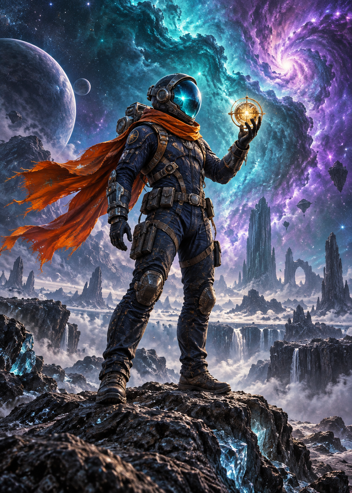

BEYOND THE KNOWN
握住一束
来自宇宙的光。
星云深处，探险者拾起一枚失落的星核。
移动鼠标，看看光如何在卡面上流动。
插画展示版 · 单张卡面反光，尚未启用分层景深

ORBITAL ARCHIVE✦ SSR
DEEP SPACE / 001
THE EXPLORER
星核拾光者 · ∞ / 001✦
ORBITAL
THE UNIVERSE, IN YOUR HANDS.移动感光 · 拖动旋转 · 点击翻面
BEYOND THE KNOWN
星云深处，探险者拾起一枚失落的星核。
移动鼠标，看看光如何在卡面上流动。
插画展示版 · 单张卡面反光，尚未启用分层景深

移动感光 · 拖动旋转 · 点击翻面